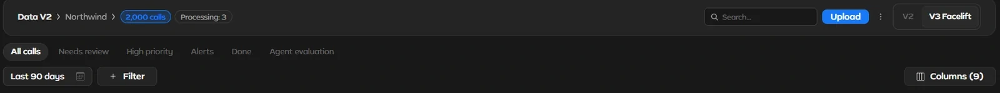
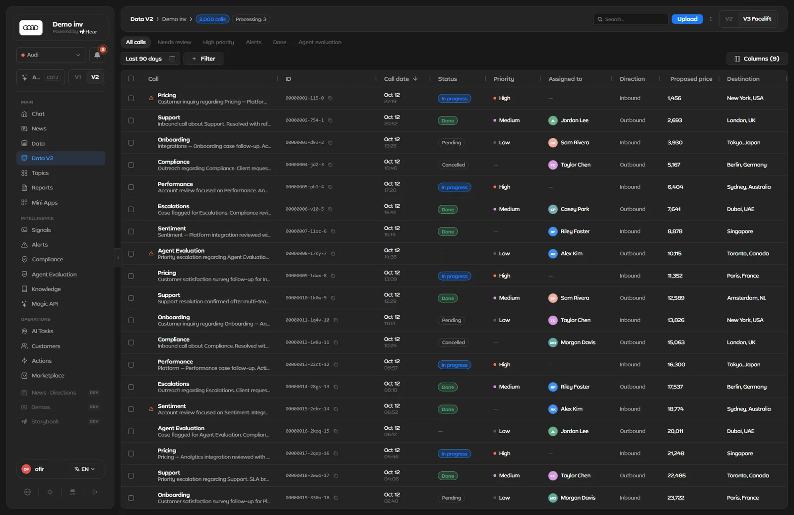

One wide call table has to answer very different questions: which calls need review, which are high priority, what happened on one call.
What I designed
V2 and V3 of the table, built with Claude Code: slim control rows, a side panel for each call, AI-built filters, and Signals that run on calls by themselves.
Outcome
The versions sit side by side, one click apart, and the AI's work lands as a normal filter chip you can read and remove with one click.
Data in the current Lab. Describe the calls you want in plain words, and Generate turns it into a filter chip you can read and remove. Then open a call beside the table and ask the AI about it.
01 · The table
One table, a lot of questions
Data answers very different questions from one table: which calls need review, which are high priority, what happened on this one call. All the controls sit in three slim rows above the table, and the table takes the rest of the screen.
Here is that toolbar, part by part.
Design Lab · demo data

1234567
567
The Data toolbar. Numbers match the list below.
Where you are. The breadcrumb, how many calls are in view and how many are still processing.
Tabs. All calls, Needs review, High priority, Alerts, Done and Agent evaluation slice the same table.
Date range first. It sits ahead of every other filter.
Filter. A plain-language box on top, then a searchable list of fields in groups, starting with Call and Alerts.
Columns. One button, with a count, at the far end of the row.
Search and Upload. Top right, apart from the controls that slice the table.
Version switch. V2 and V3 Facelift: two designs of this page, one click apart.

Design Lab · demo data
Data V2, dark. Topic and one-line summary first, then ID, date, status, priority and owner. Click to enlarge.
Rows that read left to right
Each row leads with the call's topic and a one-line summary. Then an ID chip with a copy button, the date and time, a status pill, a priority dot, the owner and the direction, with more fields further right.
A small warning sign marks a call where an alert fired. Open the call and the side panel names the alert and whether it was marked a false positive.
Design choice: a call opens in a side panel next to the filtered table, with Open full call one click away. The arrow keys step to the next call and Esc closes the panel.
What the clip at the top shows
DescribeOpen Filter, type "High priority calls" and press Generate.
CheckThe result is an ordinary chip, Priority: High, with a remove button and Clear all.
Keep"Unsaved changes" appears with Reset and Save as view.
OpenA call opens beside the table, with its summary, fields and the alert that fired.
AskAsk AI about this call. The question arrives scoped to Data and the project.
Design choice: the AI's work ends up as a normal filter chip. You can read exactly what it did, and remove it with one click.
02 · Three versions
Three versions of one page, kept side by side
I didn't redesign Data in place. I duplicated the page, changed the duplicate and kept both. V1 came with the starting app; V2 and V3 are mine, and the Lab still keeps more than one version, one click apart.
V1 · MarchFrom the starting app: a preset dropdown, filter chips, a filter popover with an explicit Apply, and "Add columns" in the header.
V2 · MayA duplicate of V1, "so the existing filter system is preserved". Filters move into a strip that collapses to the preset and the applied chips. Opened, it shows a describe-your-query box, editable filter rows, and Reset, Save and Apply.
Columns · MayColumns move inside the strip, as the saved-views plan proposed, then go back to a modal (Decision 1).
V3 · JuneColumn-first: click a column and its operator and value editor opens. It first floated beside the row and closed on mouse-leave. Later the same day it moved inline under the row, with confirm and clear. V1 was retired.
Shared filter · JulyV2's own strip gives way to the filter from the Alerts page, so both pages filter the same way.
The Lab today · OctoberTabs, a date range, a Filter with a plain-language box, Columns with a count, "Save as view", and a V2 / V3 Facelift switch on the page.
What the versions explored
Where filters sit: a popover, a collapsible strip, or the columns themselves.
Where a filter is edited: a two-step modal, a floating editor beside the row, then inline under the row.
When filters apply: on Apply, on every change, then on Apply again (Decision 2).
Where columns sit: a header button, inside the strip, a modal, a floating panel, then as the first step of filtering.
Why keep them all
The Lab's version switch lets one screen hold several designs on the same demo data. Today Data carries a V2 / V3 Facelift switch, and Signals a V1 / V2 one.
Design choice: a new idea goes in as a copy, not an overwrite, so the earlier version stays one click away.
03 · Plan vs build
The plan saved the whole screen as one view. The build took a longer road.
Saved views started as a one-page plan: three UI states, eight decisions, each with options, a recommendation and a reason, and twelve edge cases marked "Handle v1" or "Punt v2".
Its core idea: a View saves the filters, the visible columns and their order together, and a pill says when the screen no longer matches it. Here is what happened to each recommendation.
The plan's recommendations, and what got built
The plan recommended
What happened
Call it a View, not a Preset"Reads as the whole screen state, not just filters"
In the LabThe July build still said "Preset". The current Lab saves with "Save as view".
Show when the screen no longer matches the saved view
In the Lab"Unsaved changes" appears with Reset and Save as view as soon as a filter changes.
Columns stacked under the filters, collapsed by default"Filters are edited often, columns rarely"
RevertedBuilt in the strip, then replaced by a columns modal (Decision 1). Today Columns is one button with a count, at the end of the filter row.
One saved state for filters and columns
PartlyOn the column-first page, the built-in presets set both. A preset you save there keeps filters only.
A view switcher (rename, duplicate, set default, share), with views for a project or the whole org
Not builtNot in the July build.
Decision 1 · Where columns go
Should columns sit inside the filter strip, or in their own modal?
Inside the stripThe plan's answer. Columns stack under the filters, collapsed to a count, with one Reset, Save and Apply for both. Built first.
A columns modalThe pattern the platform already used, opened from "Add columns". Edits stay a draft and only land on Apply.
Column-firstA third model, from June: picking a column is the first step of filtering it. Built as its own page.
Why: reuse won over the plan. Columns went back to a modal "in favor of the existing platform pattern". The column-first idea came later, as a separate page.
04 · Decisions
When filters apply, and table or list
Two habits run through my work on Data. Reuse what exists: Data dropped its own filter strip for the one on the Alerts page; the code comment reads "Filters (matches the Alerts page)". Use real data: the column-first presets "reference only real filterable columns + real values".
Reuse shows up again in the next two forks.
Decision 2 · When filters apply
Should a filter apply the moment you click, or wait for Apply?
Apply on every changeTried on V1 in June: filters applied by themselves and the Apply button went away.
An explicit ApplyThe plan's choice, and what the shared filter from Alerts brought back. Set up the conditions, then run them once.
Why: as the plan put it, toggling an option shouldn't re-run the query on every click.
Decision 3 · Table or list
Reports and Signals: a grid like the other data pages, or an accordion list?
A gridRows read the same way as on the other data pages. In March, Reports moved to a grid to match Signals and Agent evaluation.
An accordion listTried on both in May. A collapsed row shows a status dot, name, badges, schedule and a toggle, with a status badge only for failed, error or not-executed. Expand it for context, trend, details and actions.
Result: Reports went back to a grid in July. In the current Lab, Signals opens as a table too, with a V1 / V2 switch in its header.
05 · Signals
Signals that fire on their own
A signal is a classifier that runs on calls, either AI or rule-based. With its Auto switch on, it runs by itself, and its status says whether it is Active, Triggered, Paused or in Error. Signals feed the rest of Hear: on the Actions board, a task can come from a signal.
Design Lab · demo data
Signals in the current Lab. Switch one on, or build a new one: what to detect, which folder it lives in, and the fields to pull from every call.
Creating one
A name, a folder (or a new one, right from the menu) and the model it runs on.
A plain-language description of what it should detect.
Items: each one a field to pull from the call, with a name, a key, a type and its own description.
Save, and the signal lands at the top of the list, with its folder's count updated.
Design choice: an AI or System chip sits beside a signal's ID, so how each signal runs reads straight from the list.
What changed since July
In July, Signals was an accordion list with status tabs, and Create signal had a name, a model picker, a description and draggable items. In the current Lab the list is a table, its tabs are folders with counts, and Create signal asks for a folder.
The item row travels too. The Knowledge glossary row mirrors it exactly, so a glossary term and a signal field are edited the same way.
Screens from Hear Design Lab with demo data. Quoted lines are from the Lab's commit messages, code comments and a saved-views planning page (March to July 2026).